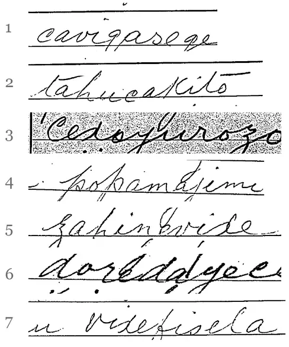

Follow-up
The 1916 condenser telegrams, revisited letter by letter
Before 文密, Sun Yat-sen's circle enciphered its telegrams with simpler “code condensers”. About fifty of them, from March to May 1916, have been deciphered and published[1, 2]. By re-reading the published transcriptions against the scans of the forms, we amended 28 characters, checked some thirty readings proposed in the published text, restored a missing word, and identified several dates and names.
The decipherment of these telegrams (key family, keys in use, transcriptions and texts) was published by Daniel Bourdeau[1, 2]. This page does not touch any key: it deals only with letters, re-read on the scans.
The approach
The published texts keep some characters that make no sense, marked with a question mark. Many of them come from a single misread letter in a ten-letter word: in this system, two syllables give a four-digit telegraph code, hence one character, and one wrong letter changes that character.
- We reproduced the published decipherments exactly from the published transcriptions (50 telegrams, seven keys).
- For each doubtful character, the computer tried every variant that changes a single letter, ranked by sense (a language model) and by the known confusions of the clerks' handwriting and of Morse. The final choice was made by reading the Chinese and cross-checking the other telegrams. Result: 45 proposals, then 4 more from a systematic sweep of the g/q, d/x, s/x and k/h confusions.
- The words concerned were re-read blind on the JACAR scans[a], in two batches: 45 and then 42 extracts in shuffled order, with no hint of the target letter or of the expected reading, and eight control words (78 letters out of 81 recovered).
A proposal is confirmed when the scan shows the proposed letter: it is the transcription that needs amending. It is rejected when the scan does show the transcribed letter: if there is an error, it dates from 1916 (encoding, Morse or copying), and reading cannot correct it.
Tally
First batch: 21 proposals confirmed, 22 rejected, 2 giving a third letter. Second batch: the 4 new proposals confirmed, 3 new readings, and a check of the readings proposed or applied in the published text (below). Across both batches, 30 of the 47 g re-read were q, never the other way round; next come d for x (9 of 36) and s for x (6 of 33).
The copyists' handwriting
The telegrams were copied out by hand by clerks of the Japanese Telegraphs, in Latin letters that meant nothing to them. Their handwriting has consistent habits, which one must know to read the scans:
- the c, small and open, looks like an e;
- the p rises very high, with loops;
- the q has its loop on the right, the g on the left: this is the difference most often missed (30 of 47 transcribed g were q);
- the x, made of two back-to-back curves, looks like a d, sometimes like an n.
A single one of these confusions is enough to change the character, and so the meaning: vixe gives 則 (“then”), vide an unrelated 剮; xunu gives 東 (“east”, as in 山東), dunu 泯.

Twenty-eight corrections confirmed on the scans
In the table, the corrected letter is in bold in the word as written on the form; the published transcription is in brackets. The images are those of JACAR B03050088300 (March–April) and B03050089100 (May)[a].
| Telegram | Before | After | Word on the form | Meaning |
|---|---|---|---|---|
| 26 March 1916, Sun Yat-sen → Yamada Junzaburō (Shanghai), image 0465 | 京信□□□策 | 京信：莫利遜策 | caviqasege (cavigasege) | “Letter from Peking: Morrison's plan” — George E. Morrison, political adviser to Yuan Shikai. The plan: Yuan steps down, Li Yuanhong acts in his place, and Yuan returns with British backing after the war. (莫 rests on the reading j of the published transcription, marked there as uncertain; the j is clear on the scan, non-blind check.) |
| 27 March, Shanghai no. 0129 → “Rosamonde” (Tokyo), images 0460–0461 | 略可支配[漆?]，無餘裕 | 略可支配，然無餘裕 | qureluhova (qurelukova) | “… can roughly be covered, but with no margin at all” |
| ibid. | 外湘[陲?]萬餘 | 外湘需萬餘 | mejuhayije (mejihayije) | “Hunan needs over 10,000 more” |
| 27 March, Manila no. 19 → Rosamonde, image 0461 | 以後請用[愴?]堂留下電碼 | 以後請用展堂留下電碼 | cexoyurozo (cedoyurozo) | “from now on, use the code left by Zhantang” (Hu Hanmin, 胡漢民) |
| 27 March, Sun → “Konglipo” (Manila), image 0445 | 舅電稱閩[夠?]需款 | 舅電稱閩尚需款 | parakuxoke (parakusoke) | “Uncle wires that Fujian still needs funds” |
| 30 March, Sun → Yamada, image 0473 | 孫[斕?] | 孫文 | cukirovopo (cukirovoko) | Sun Yat-sen's signature |
| 30 March, Sun → Yamada, image 0475 | 無嶁剮[?]王統得手 | 無已，則□王統得手 | zahinevixe (zahinovide) | “failing that, then … for Wang Tongyi to gain a foothold” (the e is a new reading, the x the proposed correction) |
| 30 March, Qingdao → Rosamonde, image 0476 | 直可逡濞[?] | 直可□濟 | vosorediqe (vosoredige) | 濟: probably Jinan (濟南), capital of Shandong; the preceding character is still unread |
| 31 March, Sun → Yamada, image 0486 | 如需其往潮，[剮?]往臺灣轉赴汕較妥 | 如需其往潮，則往臺灣轉赴汕較妥 | vixefisela (videfisela) | “if he has to go to Chaozhou, then it is safer for him to go via Taiwan and on to Shantou” |
| 31 March, Manila no. 42 → Rosamonde, image 0478 | [鯿?]向匯豐[頫?]四仟[庫?]覆[鎣?] | □向匯豐□四仟圓。覆。英 | qoxegonoqo, yufurovusi (qoxegonozo, yufurovisi) | “… at the HSBC … 4,000 yuan. Reply. — Ying”: the same signature as the other Manila telegrams. Tokyo replies on 1 April: 四千圓已收, “4,000 yuan received” |
| 1 April, Qingdao no. 2 → Rosamonde, image 0490 | 墨[?]兄。軍禘[?]百萬元，速寄 | 廖兄。軍票百萬元，速寄 | Gufopujiro, zupeqamenu (yufopujiro, zupegamenu) | “Brother Liao: one million yuan in military scrip, send it quickly” — probably Liao Zhongkai (廖仲愷), one of the finance officers of Sun's party (廖 is a new reading) |
| 3 April, Shanghai no. 0118 → Rosamonda, images 0489–0490 | 潮汕事古[各?]電仲元，無覆 | 潮汕事兩電仲元，無覆 | faxifameku (fasifameku) | “about Chaozhou and Shantou, we have wired Zhongyuan twice, with no reply” |
| ibid. | 益以楊善德漬説[?]蠱惑 | 益以楊善德演説蠱惑 | fihukoqaze (fihukogaze) | “add to this the speeches of Yang Shande leading them astray” (Yang Shande, military commander of Shanghai) |
| 4 April, Aoyama → Kayano (Qingdao), image 0492 | 恐八日犂[?]艤铒齡[?]辦 | 恐八日□尚難辦 | loceluduqi, zomarosaqi (loceludugi, jomarosaqi) | “I fear that for the 8th it will still be hard to arrange” |
| 17 May, Tokyo → Yamada, images 0061–0062 | 學生於北九[芳→州?/省?] | 學生於北九省 | xiqitobeku (xigitobeku) | the character is certain; the meaning of the sentence remains to be clarified |
| ibid. | 王等主急進，惟[舵?]遵守方略 | 王等主急進，惟皆遵守方略 | dineneqive (dinenegive) | “Wang and the others want to move fast, but all keep to the plan” |
| ibid. | [重民飢?]先生言日人送有二機 | 重民謂先生言日人送有二機 | xiqoraseqi (xigoraseqi) | “Zhongmin says the Master spoke of two aircraft sent by the Japanese” (Xia Zhongmin, 夏重民) |
| 25 May, Tokyo → Yamada, image 0087 | 取[銷]前[孌?]，速覆 | 取銷前令，速覆 | teyoqebexo (teyogebexo) | “cancel the previous order, reply quickly” |
| 26 May, Tokyo → Yamada, images 0092–0093 | [寡?]其詳電 | 促其詳電 | fujiqedase (fujigedase) | “I urged him to send a detailed telegram” |
| 25 March, Shanghai no. 054 → “Rosamonde”, image 0468 | 慮滬動，防[篚?]王謀 | 慮滬動，防礙王謀 | tibinepuxa (tibinepusa) | “we fear that a move in Shanghai would hamper Wang's plans” |
| ibid. | [供?]是[徊?]動 | □是後動 | toqifiheti (toqifiketi) | end of the message, still incomplete: “… then act” |
| 31 March, Sun → Yamada, image 0485 | 故托此爲辭，牕吁[?]得款耳 | 故托此爲辭，□再得款耳 | qugoqaxihe (qugogasihe) | “they use this as a pretext to get money again” |
| 21 May, Tokyo → Yamada, image 0071 | 撥款派[螅→軍?]人[食?]前[世?]辦法 | 撥款派□人謀前一辦法 | depaxaqopo, teyopaqevo (depaxagopo, teyopagebo) | “… send men to carry out the earlier plan”; meaning to be clarified |
| 23 May, Tokyo → Yamada, image 0075 | 定須先[刈?]知[亢云?] | 定須先□知云云 | ribipaqopa (ribipagopa) | 云云 closes the quotation of the letter received |
| ibid. | [佚→該?]定洋不…出也 | 但定洋不…出也 | qeqigegidu (qegigegidu) | “but the deposit cannot be …” |
What the re-reading added
A forgotten word (Shanghai, 3 April 1916)
This telegram announces 36 words; the published transcription has only 35. On the second sheet, the left-hand word of the sixth line was skipped. Without it, the end of the message is shifted by one syllable and only reads by assuming “two lost letters”. Once the word is put back, the end falls into place by itself, with no other assumption:
已澈查，局非誑騙。唯近有抽調確息，至爲可慮。
“We have investigated thoroughly: the affair is not a hoax. But there is reliable news of troop transfers: this is most worrying.”
The forgotten word and the length of the next word (ten letters, not eleven) were checked blind; 確 (“reliable”) is a confirmed correction (zeqaxahidi). The o of 查 is a variant given by the reader, whose preferred reading was a.
Liao's name (Qingdao, 1 April 1916)
The first word, transcribed yufopujiro, actually begins with a capital G: it gives 廖兄, “Brother Liao”, instead of 墨兄. Together with the correction 軍票, the message becomes a precise request for military scrip addressed to one of the party's finance officers. Military scrip comes up again on 29 May, in a telegram from Tokyo (濰縣電索軍用票, “Weixian wires asking for military scrip”).
Ozaki and the aircraft (Tokyo, 17 May 1916)
A nine-letter word, given as illegible in the published transcription, re-reads as n?juqigomo, one vowel remaining illegible. With o, the only vowel that makes sense, the sentence becomes 又尾崎還京，無飛機: “Ozaki has returned to the capital without aircraft”. It runs on into what follows: 重民謂先生言日人送有二機，現在何處？否則須購買也, “Zhongmin says the Master spoke of two aircraft sent by the Japanese: where are they? Otherwise we will have to buy some”.
Restorations confirmed by the scans
Several characters restored in brackets in the published texts are indeed written on the forms: 政 in 若□等政府成立 (4 April), 報 in 覆再報 (31 March), 縣 in 神奈川縣 and 島 in 青島 (4 April).
Ding, wounded in the attack? (Tokyo, 20 May 1916)
A word given as illegible in the published transcription (rexo??mavo) re-reads as rexodomavo, the fifth letter hesitating between d and a. With d, the only regular choice, the end of the message becomes 報載丁曹在傍□□傷，確否？: “the papers say that Ding … was beside him and was wounded: is it true?”. The telegram comes two days after the assassination of Chen Qimei; the Shanghai telegram of 22 May also mentions a Ding (丁…傷輕, “… slightly wounded”).
The published readings, checked
The published text proposes, in brackets, readings that change one letter, and applies others directly in the transcription. The second batch checked them on the scans.
- Confirmed (the scan shows the proposed letter): 回 (24 March, 觀其如何回答), 款 (30 March, 盡力向閩幫籌款), 查 and 有 (30 March, Tokyo → Qingdao: …查帝制取消後軍隊有無退志), 告 (30 March, 請轉告汝爲), 此 (30 March, Qingdao: 此間一舉), 知 (28 March, Qingdao: 懇速示知), 警 (4 April, 神奈川縣警部), 匯 (4 April, Shanghai: 如匯款，請寄港), 東 and 在 (20 May: 山東; 報載丁曹在), 銷 (25 May: 取銷前令). The first batch adds 政, 報, 縣 and 島.
- Not confirmed (the scan shows the transcribed letter): 將 (28 March), 卽 (25 March), 忍 and 追 (24 March), 在 (31 March), 籌 (4 April), 手, 備 and 望 (20 May), 軍 (21 May). They remain possible as errors made in 1916, but the form does not support them.
- Corrections applied in the transcription (mostly g → q): of 21 letters checked, 19 are correctly written on the form; the difference comes from the transcription, not from the 1916 copy. Only two are original errors: 請 (Shanghai, 4 April: g written for z, −−· instead of −−··) and 傷 (Tokyo, 19 May).
Characters that were dates or names
Some characters left in suspense did not need correcting: they are dates, written with the 韻目代日 convention (one rhyme character for each day of the month), or names.
- Qingdao, 25 and 28 March: the signatures 正徑 and 正勘 read “Zheng, the 25th” and “Zheng, the 28th” (Ju Zheng, 居正). These are exactly the dates on the forms.
- Tokyo, 25 May: 沁日歡迎克強後，儉歸, “after welcoming Keqiang (Huang Xing) on the 27th, I return on the 28th”.
- Tokyo → Manila, 1 April: 四千圓已收，卽轉匯許, “4,000 yuan received, forwarded at once to Xu” (Xu Chongzhi, 許崇智, who had asked for these funds on 26 March).
- Shanghai, 26 March: 滇有正式公文派趙伸赴東, “Yunnan is sending Zhao Shen to Japan with an official letter”. This is the 伸 who, a few months later, signs the 文密 telegrams of this investigation.
Three conjectures
For three proposals, the scan shows the transcribed letter, but the sense requires the other letter and a Morse fault explains it, since these forms were received by telegraph: these are probable errors made in 1916, not readings.
- 席正[噶]言直隸事頗好 → 席正銘言 (Shanghai, 27 March): Xi Zhengming, of Tianjin, is named in clear in two May telegrams. One lost dot is enough: i (··) becoming e (·).
- 爲誰用期密碼 → 爲誰用本密碼 (Manila, 27 March), “who is using our code?”: q (−−·−) received as g (−−·).
- 近刋索三萬 → 近函索三萬 (Shanghai, 31 March), “30,000 has just been demanded by letter”: the same q/g confusion.
What did not hold
For 22 proposals, the scan shows the transcribed letter, and nothing requires changing it: they are dropped. In telegram order, they are: 徑 (Qingdao, 28 March), 先, 圖, 海, 謀, 全, 反, 俟, 仍, 到, 船, 能, 彼, 交, 逼, 孫 (Shanghai, 19 May), 持, 碼, 必, plus the three conjectures above. Two others (請, 領, Manila, 31 March) give a third, meaningless letter on the scan. These failures matter: they show that a correction that suits the sense is not enough, and that re-reading the scans decides.
Checking
All the proposals and checks from both batches, with the word in the published transcription, the word read on the scan, the letter at stake and the verdict, are in the file solver/data/relecture-1916.csv. The images can be viewed freely on the JACAR website.
- JACAR, Diplomatic Archives of the Ministry of Foreign Affairs of Japan, series 1.6.1.4-2-1-2 “特定人ノ発受郵便物取調”: B03050088300 (images 0441–0495, late March – early April 1916) and B03050089100 (images 0060–0117, May 1916). Transcriptions and keys: Daniel Bourdeau[1, 2].